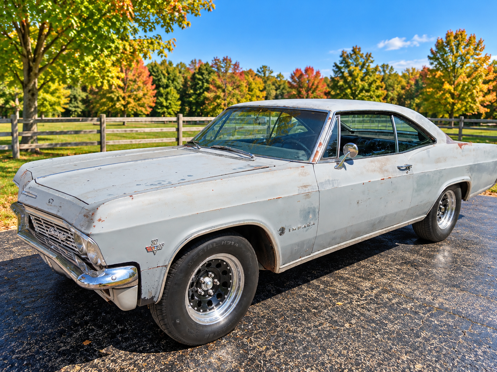
An unfinished classic with a solid California foundation and considerable work already completed. The previous owner passed away before finishing his vision for this Impala, leaving the next owner an opportunity to complete the build to their own taste and standards.
Engine: Rebuilt 350 Chevrolet V8, bored .030 over; runs and sounds strong
Fuel & Ignition: Holley double-pumper carburetor and MSD electronic ignition
Transmission / Shifter: Turbo 400 automatic with B&M shifter
Brakes: Upgraded 4-wheel disc brakes with drilled/slotted rotors
Cooling: 4-core radiator
Additional Mechanical Work: Newer brake, fuel and transmission lines, newer exhaust and tires
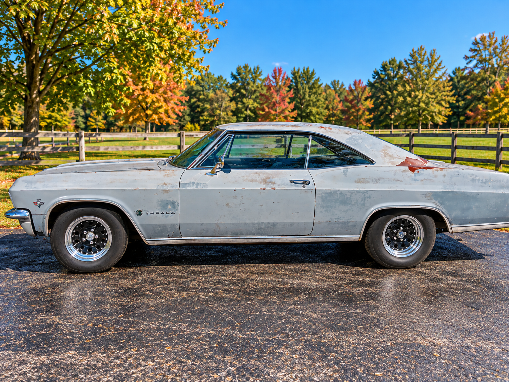
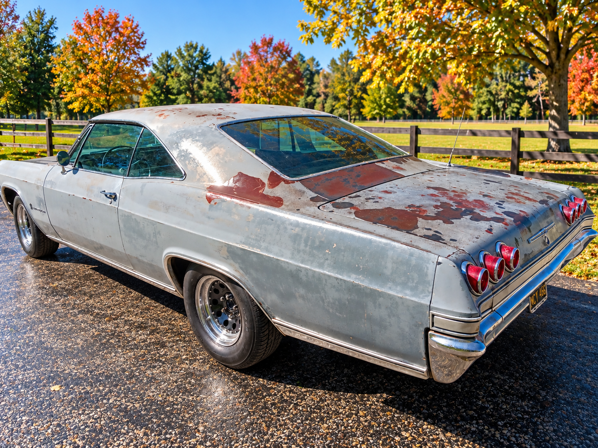
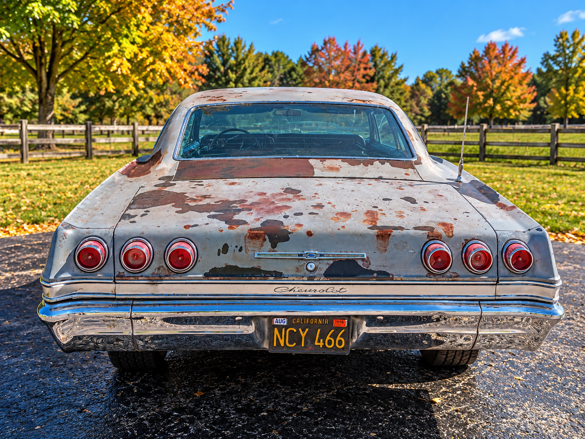
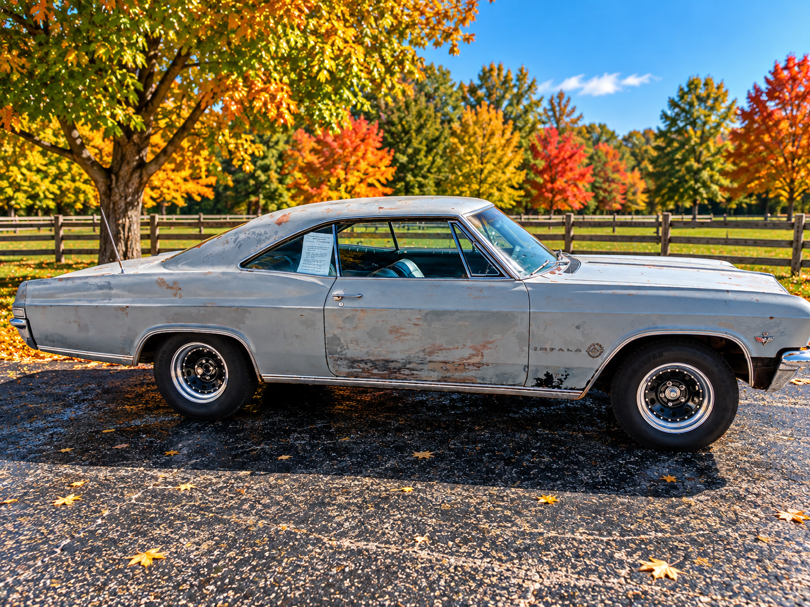
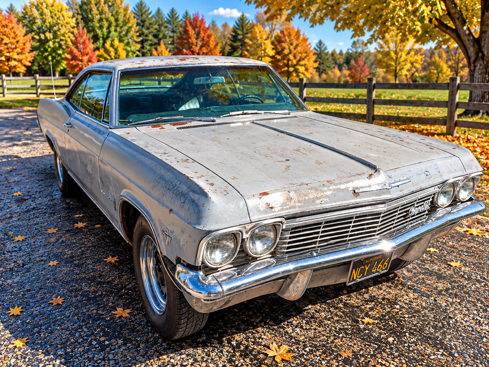
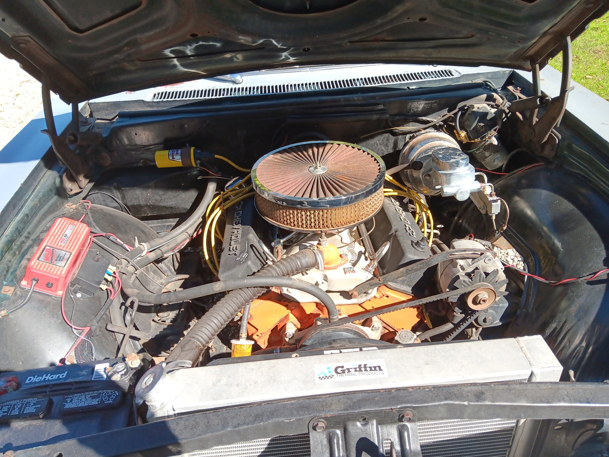
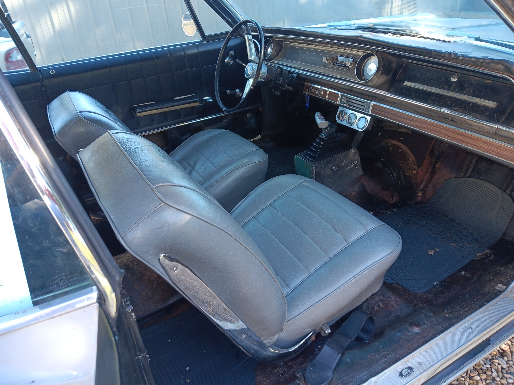
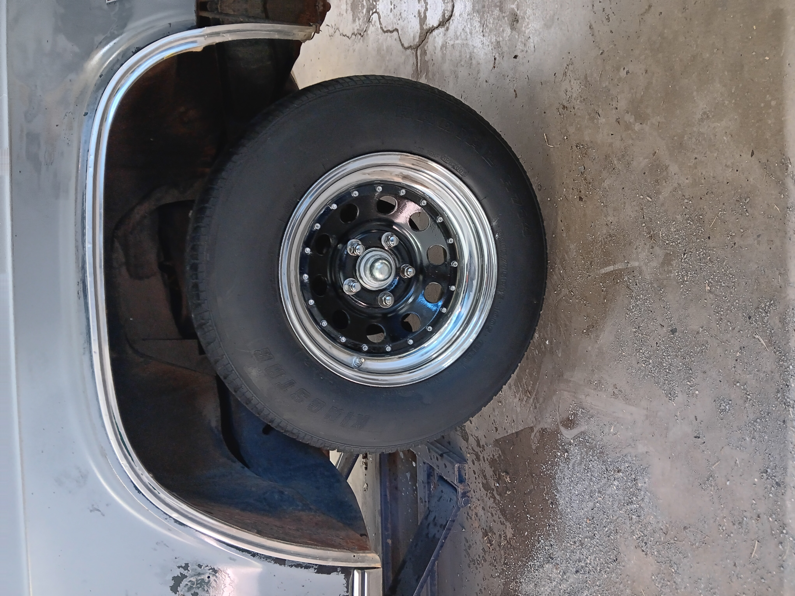
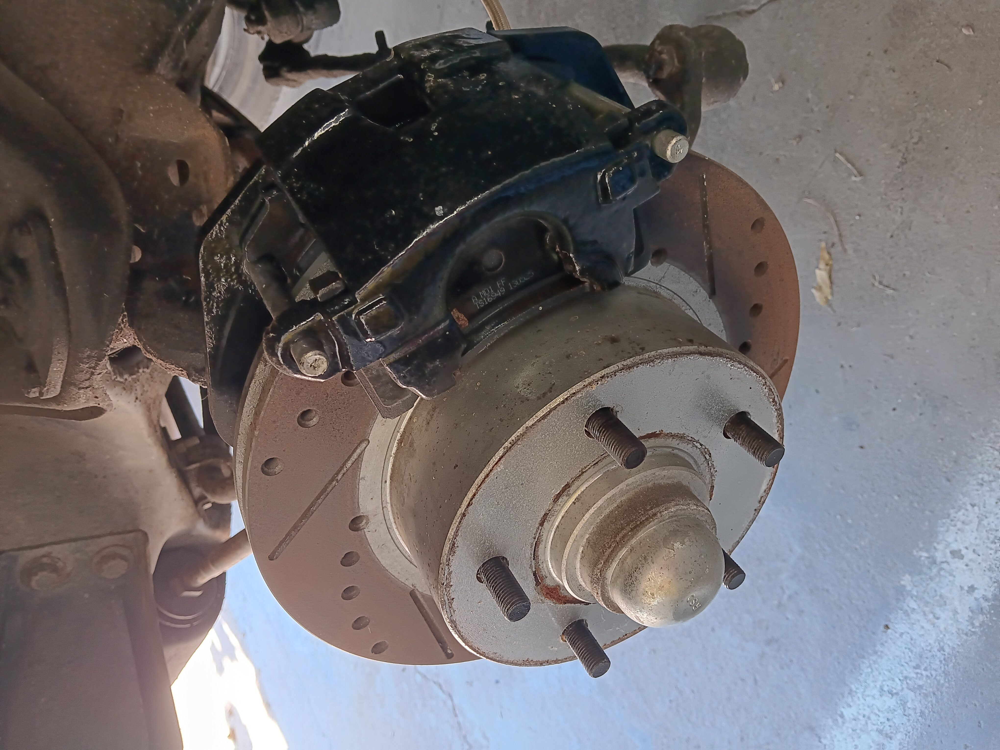
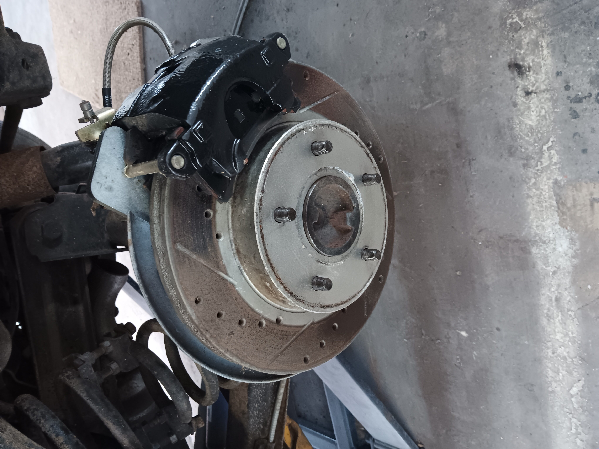
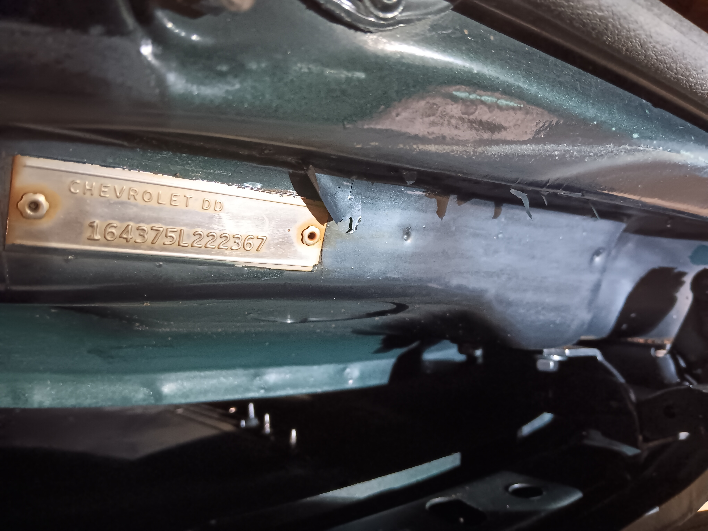
The car is running and sounds strong, but is offered as an unfinished project, not a completed restoration. The original primer finish has been preserved with one coat of clear sealer.
The next owner should plan for front suspension and steering work, repair or installation of the neutral safety switch, and interior finishing including headliner, carpet, and door panels. The front bucket seats shown are usable but are not original to the car. Additional mechanical and cosmetic work will depend on the buyer's plans and desired finish.